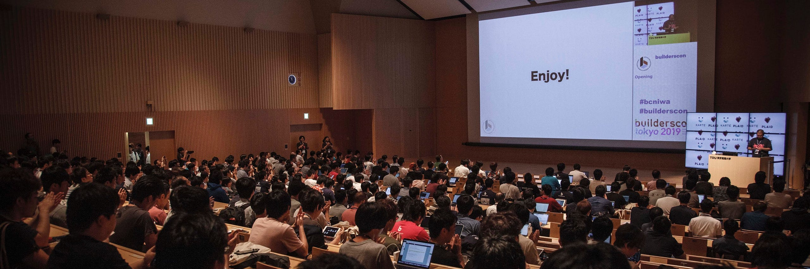

2020年からのカンファレンス設計について考えること
2020年からのカンファレンス設計について考えること

ここ数年、技術カンファレンスと名のつくものが急速に増えてきたと感じていました。人と人が出会う場所が増えるのは大変素晴らしいことですが、これは同時に参加者の方の期待値や需要と供給のバランスがシフトするということであり、長期的にイベント運営を考える人間は向き合わないといけない命題であると思います。
歴史的に技術カンファレンスとは情報発信と交流の場でした。今も本質的な変化はないとは思いますが、そこに人を集めるための考え方が変わってきているのではないかと私は考えています（ここでは特に数百人〜数千人規模のカンファレンスをイメージしています）。
なおこれは DevRelcon で話そうと思っている内容の下書き的な内容であり、コミュニティ•カンファレンス運営 Advent Calendar 2019のエントリでもあります。Devrelconについてはちょっとネタバレでもありますが、当日までにはもっとまとまった形で伝えられると思うのと、英語なのでオーディエンスが違うからきっと大丈夫でしょう。
情報発信
インターネットが存在する前は当然人が集まらなければ情報を交換することが難しかったわけですが、インターネットができたあともしばらくはリッチな情報を交換するのは面と向かって話すしか選択肢はありませんでした。
今は動画サイトもたくさんあり、そこにあがったコンテンツを視聴するための帯域も十分に提供されはじめています。カンファレンスの内容も比較的すぐに公開されるため、情報を得るためにカンファレンスに物理的に参加する必要性がぐっと下がっています。
こうなってくると情報の発信の場としてのカンファレンスの立ち位置は微妙と言えるのではないでしょうか。ただ、発信する情報の内容が重要でなくなった、というより、「価値のある情報が発信されるのが当たり前になった」「情報のリアルタイム性の価値が低くなった」ということなのではないかと考えています。
交流の場
それでは交流の場としてのカンファレンスはどうでしょう。これはいまでも基本的には変わってないと考えています。カンファレンスに物理的に人が集まるということは、普段喋る機会のない人同士が交流を持てるということでありそのメリットはまだ健在でしょう。
ただし、これも今となってはいくつかの問題があると感じています。情報を得るために物理的なプレゼンスが必要なくなったのと同じくらい、交流するのにも物理的なプレゼンスの必要性は下がっています。
もちろん、実際に会うことに価値がない、というわけではありません、しかし今となっては人はメッセンジャーやSNSでつながっており、物理的なプレゼンスの相対的な重要度が以前より下がっている、ということです。
経験の共有とイベントの個性がキー
これらを踏まえると今後技術カンファレンスに人を集めるために考えなくてはいけないのはその場にいる必要性のあるもの、すなわち多数の人との経験の共有を提供することだと感じています。
経験の共有とはその場で行うアクティビティに価値を持たせ、なおかつそれを現地のいる他の参加者と共有させる、という事です。逆に言えばオンラインではできないこと、リアルタイムでの共有が重要なこと、そして現場にいる他人同士でできること、というのがポイントでしょう。
Ask The Speaker、懇親会、そのたいわゆるアイスブレイキング等に使うアクティビティもこの範疇に入るでしょう。ただし、これにも注意点があると感じています。
例えば懇親会は飲み食いをしつつ交流を行う、という人間の根源的な欲求を満たすコストパフォーマンスの高い施策でしたが、現在においてはあちこちで懇親会が行われるため、ただ食事を出すだけではわざわざ会場に足を運ぶほどの魅力を参加者が感じるかどうかはあやしいところです。
これを覆すにはカンファレンスで得られる経験にある一定の個性は必要ということです。（これらが特に良い案というわけではないですが）例えば海外の人と多く交流できるであるとか、一人で参加しても楽しめる形にちゃんと工夫されているとか、の個性を出すプラスアルファがないとそれだけでの集客を望むことは難しいでしょう。
つまりこれまでは発信される情報のクォリティによって参加者を集め、その参加者同士の交流によって参加へのモチベーションを与えられていましたが、現在はそれらがあった上でそのイベント特有の経験を共有できる施策を何か追加していかないと運営が難しくなっていくのではないか、というのが私の考えです。
ちなみに経験の共有は以前からもあるMMORPG等のマルチプレイヤーのゲーム等にもコンセプトとして見られましたが、2019年に発売されたDeath Strandingはこのコンセプトをより推し進め、経験の共有をしつつ個々ののプレイヤーの経験もそれぞれのプレイヤー個人だけのものとして特別感を出す、という離れ業をやってのけていると感じています（ゲーマーの方にしかわからない話題ですみません）。
閑話休題。
本質を見失うことと華美さ
以上のような理屈で私はこれまで私が手がけてきたカンファレンスの設計からの脱却を考えねばならないと考えていますが、同時にその方向に向かった時の危険も感じています。
前述した「経験の共有」とは結局「ウケる企画」をきれいな言い方に直しただけのものです。ウケることは大事なのですが、これがプラスアルファであるという認識を失ってしまった時はもはや技術カンファレンスというものではなくなり、ある意味サーカスと同じになってしまいます。
このバランスはすごく重要かつ難しいと考えています。
特に現在我々運営に関わる人間は（間接的にとはいえど）AWSのre:InventやGoogleのGoogle I/Oを含む、バックに本気の大企業がついている華美なイベントと参加者達の可処分時間の奪い合いを行っています。あそこまで完成度の高いイベントに対抗するために過激な企画に走ってしまうのはある意味避けられないとも考えられます。
しかしその道を選んでしまうといわゆる昔の少年マンガのバトルマンガと同じで強い相手を倒すとさらに強い相手を登場させないといけないという企画のインフレを伴う競争の発生も懸念されます。
人間は刺激にはあっというまに慣れてしまいます。その道に行ってしまえば比較的すぐに（テレビが現在飽きられつつあるように）カンファレンスという取り組み自体が飽きられてしまう可能性を私は危惧します。
運営者の皆様においては、我々が行っていることの本質を見失わず、しかしカンファレンスという仕組みそのものを進化させて行きましょう！